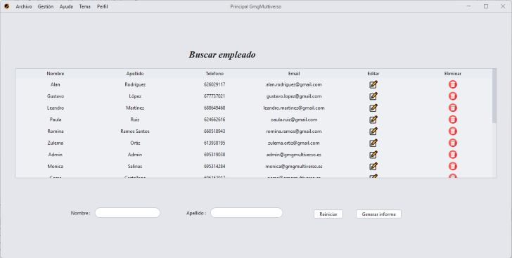
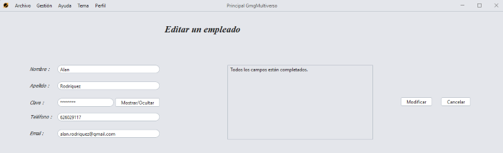

Buscar un empleado
Para acceder a la sección de búsqueda de un empleado, tenemos que pulsar en la sección "Gestión" en el menú superior, pulsar "Empleados" y luego "Buscar".
Observaremos una tabla y 2 elementos por los cuales podremos filtrar, por nombre y apellido.
Además, se puede filtrar tanto por separado como en conjunto, es decir, puedes filtrar solo por nombre o solo por apellido, o filtrar primero por ejemplo por nombre y luego por apellido, te saldrá una búsqueda conjunta.
Eliminar / Editar un empleado
Pulsando en la tabla el icono de una papelera, se eliminará un empleado.

Para editar un empleado, solo tenemos que pulsar el icono de un lápiz para que se nos cargue la opción de editar del empleado seleccionado.
Añadir un empleado
Para acceder a la sección de añadir un empleado, tenemos que pulsar en la sección "Gestión" en el menú superior, pulsar "Empleados" y luego "Añadir".
Para poder añadir un empleado, hay que rellenar todos los campos obligatorios.
GMG Multiverso